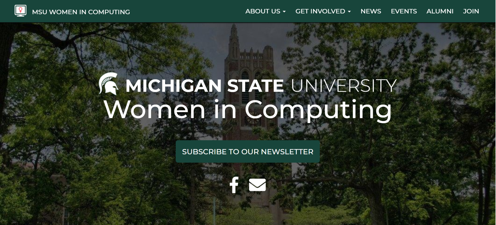

September 9, 2018

With the new school year starting, MSU WIC has launched our new and fully redesigned website! The new website is easier to navigate, full of useful information, and more accessible on mobile and tablet platforms. We have also opted out of the single-page layout and instead, the website now includes several webpages that you can explore. As the school year progresses, you may see even more changes to the website, and we appreciate any and all feedback that you provide as we improve!
We have added several new sections to the website, including outreach, news, and alumni. On the outreach page, you can learn more about some of the outreach programs that MSU WIC participates in and more information on how to get involved in these programs. The news page will act as a historian section for our website, and we will be documenting and writing short articles about our meetings, activities, and other WIC events. You can also view past WICBITS newsletter to stay up to date on our activities. Stay tuned for more details on what we will be up to! The alumni page highlights past E-Board members, and you can also view photos from as far back as 2012. If you are a current or former WIC member, we suggest that you take a look at our new alumni page!
Homepage of our new website
We are very excited to reveal our new website, and we hope that you enjoy some of the new features and sections! If you have any comments, feedback, or suggestions about our new website, please contact us.
We hope that you have had a great summer, and we look forward to seeing you at our first meeting of the school year!